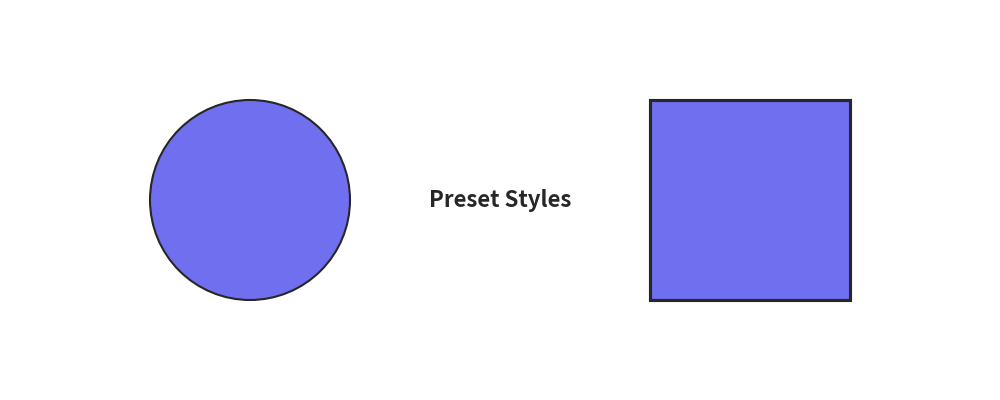
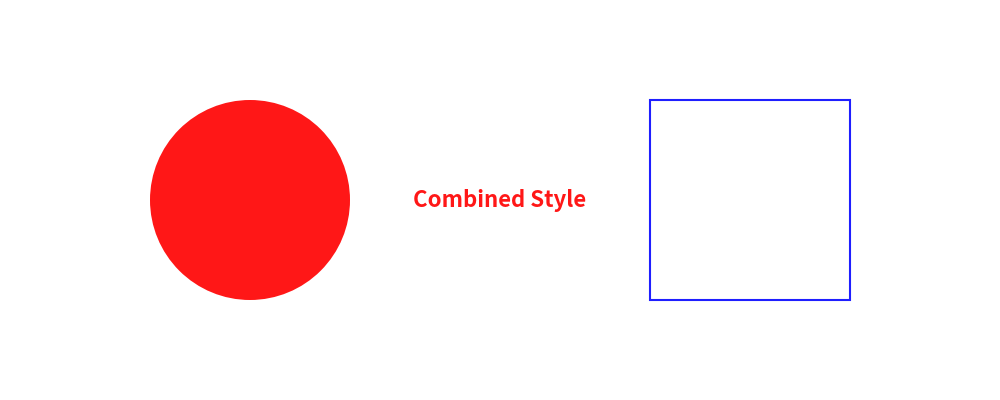
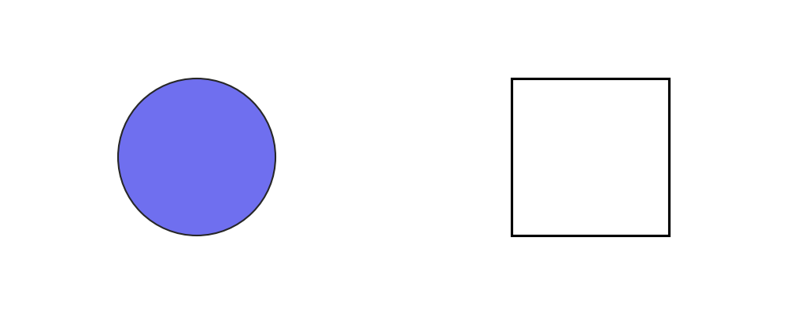
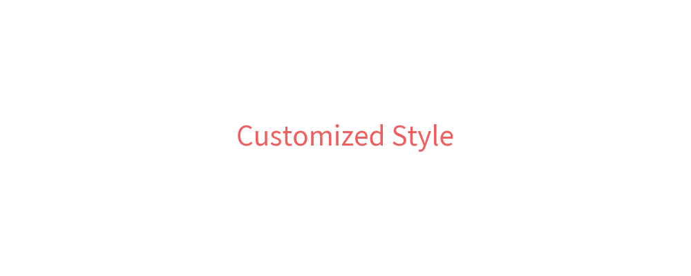

Advanced Preset Styles Topics
In this section, we cover advanced topics for working with preset styles in drawlib.preset_styles.
Resolving Styles with get_style()
Drawlib provides the get_style() function in drawlib.preset_styles to dynamically retrieve Style instances by preset name, color name, or combined style specification.
Using Preset Names
You can retrieve standard preset styles directly by name:
"primary"(or""/None): The default primary style."light": Light line/font weight style."bold": Bold line/font weight style."flat": Filled shape with no border line."solid": Outlined shape with no fill color."dashed": Outlined shape with dashed line style."solid_light","solid_bold","dashed_light","dashed_bold": Combinations of line style and weight.
Example:
from drawlib.canvas import config
from drawlib.preset_styles import get_style
from drawlib.shapes import circle, rectangle
from drawlib.text import text
config(width=100, height=40)
style_primary = get_style("primary")
style_bold = get_style("bold")
circle((25, 20), radius=10, style=style_primary)
rectangle((75, 20), width=20, height=20, style=style_bold)
text((50, 20), "Preset Styles", style=get_style("bold"))
Executing this code produces the following output:

Using Color Names and Combinations
You can also pass color names (e.g., "red", "blue", "turquoise") or combined names (e.g., "red_solid_bold") to get_style():
from drawlib.canvas import config
from drawlib.preset_styles import get_style
from drawlib.shapes import circle, rectangle
from drawlib.text import text
config(width=100, height=40)
circle((25, 20), radius=10, style=get_style("red_flat"))
rectangle((75, 20), width=20, height=20, style=get_style("blue_dashed_bold"))
text((50, 20), "Combined Style", style=get_style("red_bold"))
Executing this code produces:

Accessing Official Style Presets
Drawlib includes three official style presets: default, essentials, and monochrome.
You can access full PresetStyles objects using get_styles() or the dedicated functions:
get_styles("default")/get_default_styles()get_styles("essentials")/get_essentials_styles()get_styles("monochrome")/get_monochrome_styles()
Each PresetStyles instance contains primary, light, bold, flat, solid, and dashed Style attributes.
Example:
from drawlib.canvas import config
from drawlib.preset_styles import get_styles
from drawlib.shapes import circle, rectangle
essentials = get_styles("essentials")
monochrome = get_styles("monochrome")
config(width=100, height=40)
circle((25, 20), radius=10, style=essentials.primary)
rectangle((75, 20), width=20, height=20, style=monochrome.bold)
Output:

Customizing Style Objects
Retrieved Style objects can be modified or copied before passing them to drawing functions.
from drawlib.canvas import config
from drawlib.colors import ColorsDefault
from drawlib.preset_styles import get_style
from drawlib.text import text
custom_style = get_style("blue").copy()
custom_style.text_size = 28
custom_style.text_color = ColorsDefault.Red
config(width=100, height=40)
text((50, 20), "Customized Style", style=custom_style)
Output:

© 2026 drawlib by Yuichi Ito. Released under the Apache 2.0 License.